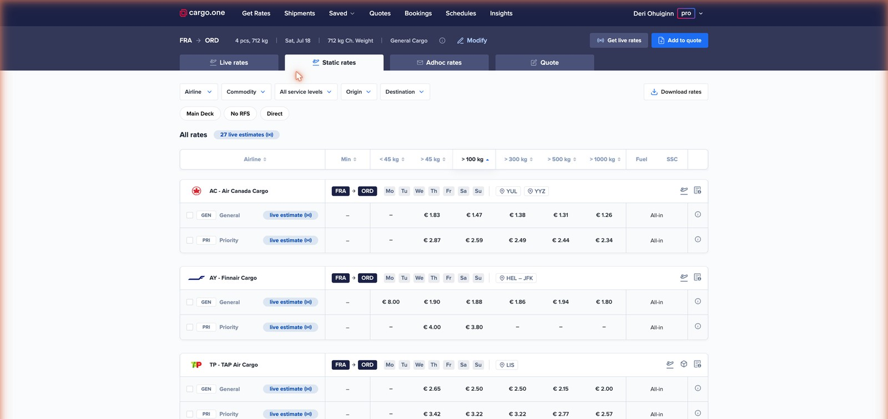
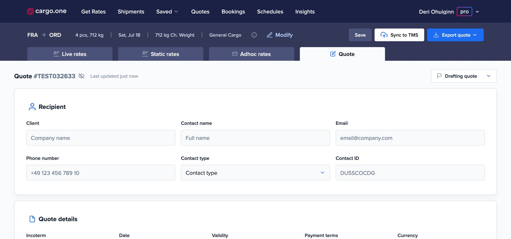

Case study · 2021 to now
cargo.one
FRA ORD · air freight
cargo.one is the marketplace where freight forwarders search, compare and book air cargo in real time. I work on the core booking platform: the client-side data model, performance, rate comparison and quoting.

The workflow
Search, compare, quote
A forwarder enters a shipment, compares live and contract rates across carriers, and turns the chosen rate into a quote for their client.
Live rate comparison
One pricing layer for every booking screen
I designed the unit-conversion and dynamic-pricing layer behind the rate grid: the client-side data model and caching that turn live carrier rates (kg/lb, weight breaks, surcharges) into a sortable comparison. Every booking screen uses it, so prices match wherever a forwarder looks.

Static and contract rates
The same components for every rate type
Forwarders also work with negotiated contract rates and weight-break tariffs. I built the static-rates view on the same components and data model as live rates, so weight breaks, service levels and filters behave the same way in both.

Rate to quote
From a chosen rate to a client quote
A chosen rate becomes a branded, exportable quote with recipient details, incoterms, validity and charges, with a path to sync into the forwarder's TMS. I instrumented the offer-to-booking funnel so the team can see where users drop off.
Impact
What I've shipped
- core platform migration, no reverts
- Vue 2→3
- less JavaScript shipped
- 18%
- countries served
- 172
- engineers using my AI dev workflow
- ~20
In 2024 I led two other engineers through the four-month Vue 2 to Vue 3 migration of the core booking platform. We shipped it section by section on the Vue compat build with Jest and Playwright coverage and never had to revert, and I wrote about 70% of the changes. The codebase moved to the Composition API, and later I proposed and made the move from Webpack to Vite, which cut the JavaScript users download by 18%. I've run the cross-team frontend guild for over four years, mentored about 8 engineers, and built the Claude Code skills and MCP server that about 20 engineers on 5 teams now use.
Since October 2026 I've been on the AI team, where I built an import-procurement flow, now in internal evaluation. It extracts shipment details from forwarders' emails, requests rates from overseas partners, parses their replies and combines them with the forwarder's own destination rates into a door-to-door quote. It's a multi-agent Pydantic AI workflow on Gemini and Claude, with Python agent services, MCP tools and a Vue UI. A person reviews each quote before it goes out, and the evals library I co-built (gold-set and LLM-as-judge checks on Vertex AI, traced in Pydantic Logfire) runs in CI for most of the team's agents.